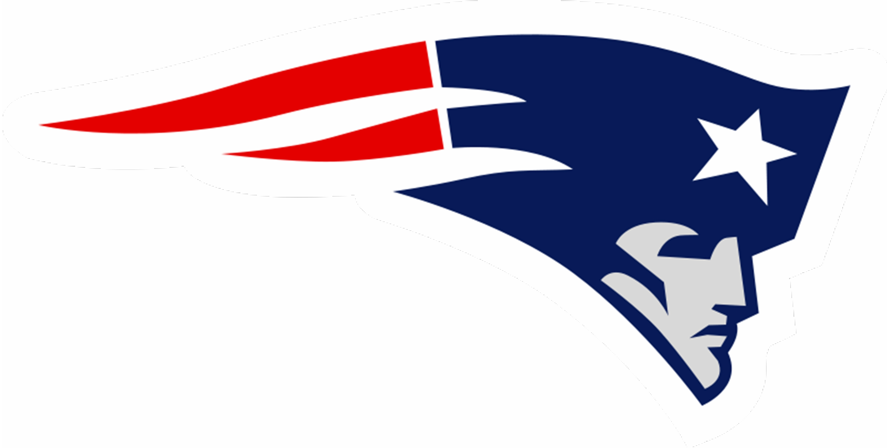
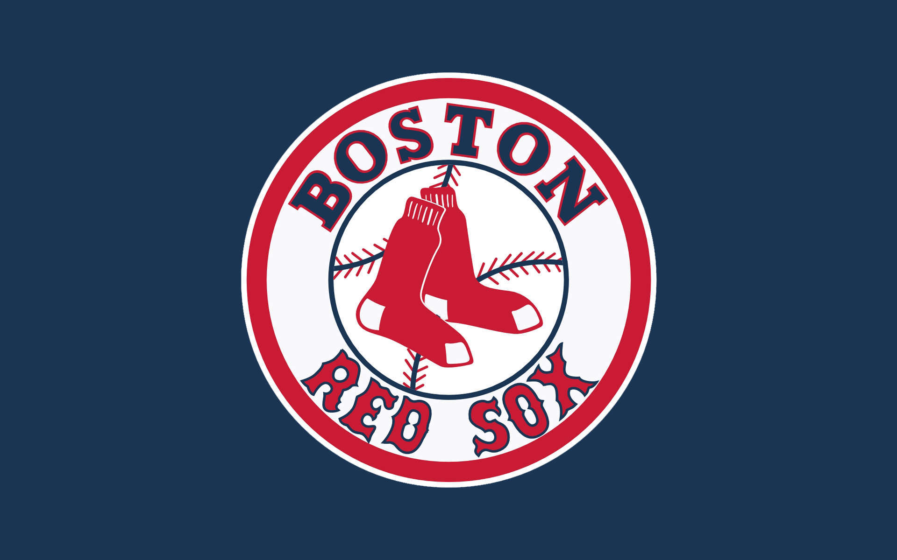

Welcome to my sports page! Sports have always been a big part of my life. I am a New England Sports fan and follow basketball, football, and baseball.
My favorite sport to both play and watch has always been basketball. Growing up watching the Celtics played really inspired me to start playing at such a young age. I played in High School and now continue to play intramural basketball through the University of Maine. The player who has probably influenced me the most on the celtics over the years is Paul Pierce. His passion and hard work ethic during his time with the Celtics is something that many people should try to relate to for things that they love.
Football is another sport that I have followed from a young age. I played soccer instead of football in High School, but have always enjoyed following the sport of football more - specifically the Patriots. I have only been to a Preseason game but hope to attend a regular season game once I am employed.
Baseball is noted as "America's Pastime." I think this rings true as I can remember playing and going to games as far back as I can remember. My Dad and I have been to many games. Fenway Park is one of the most recognized ballparks in the US. It is a great way to spend an evening or afternoon. I hope to be employed in Boston one day and I am sure Fenway would be a heavily visited spot for me. My favorite player has always been Mark Bellhorn as I saw him hit a Grand Slam when I was just seven years old.